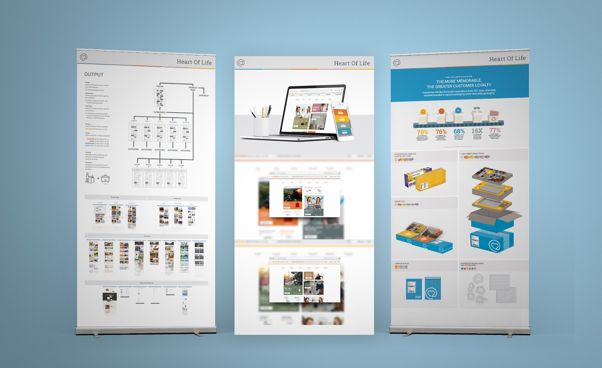
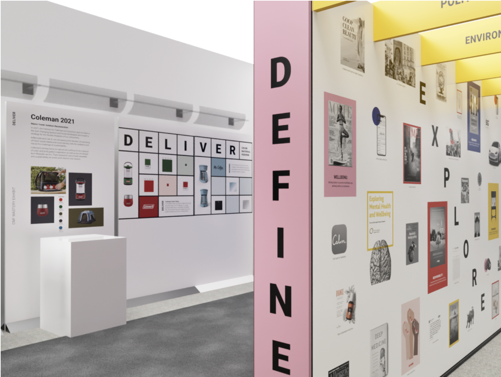
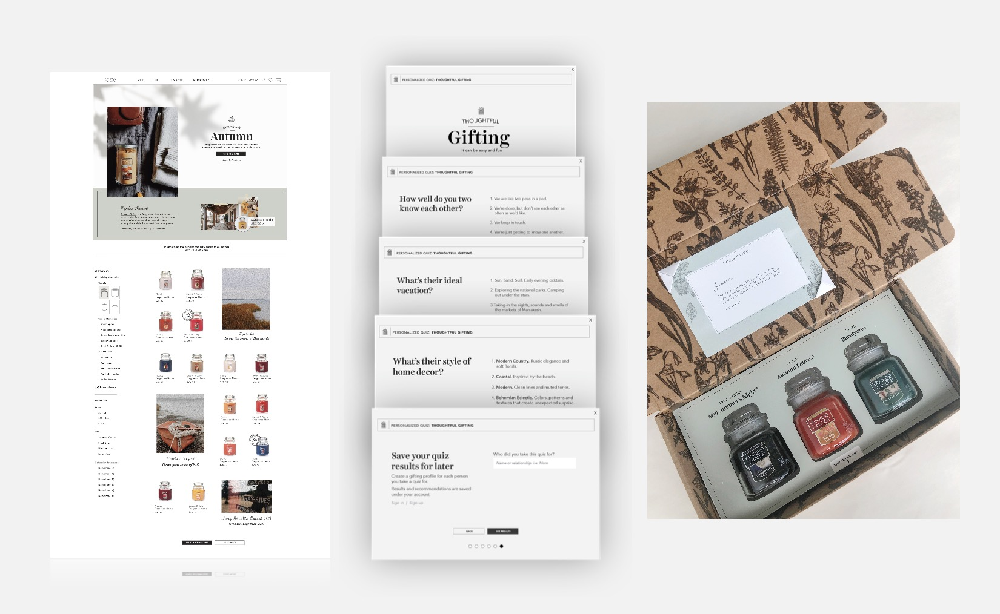
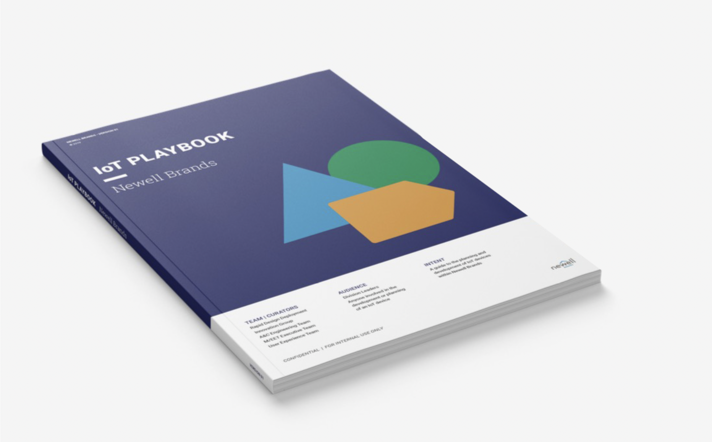
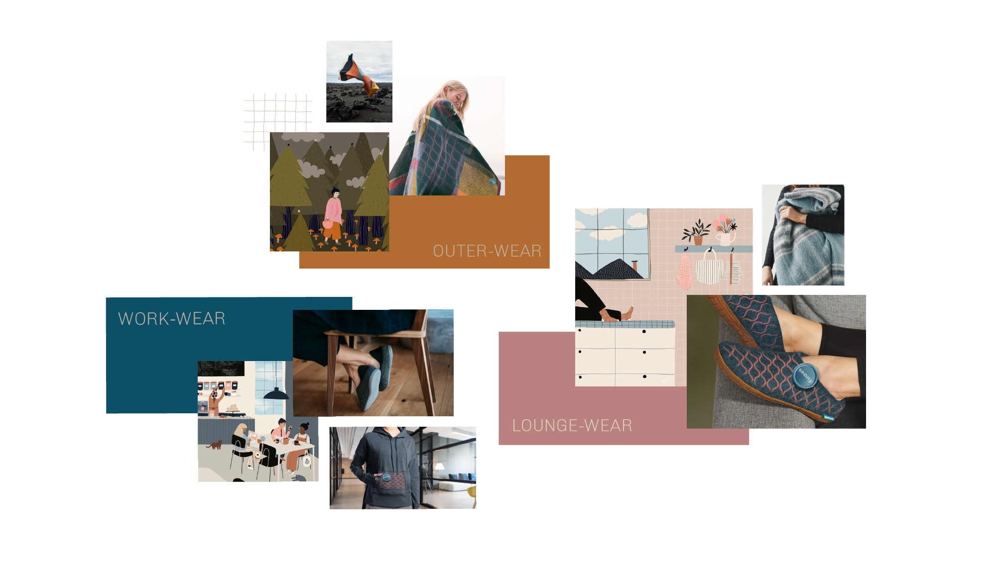
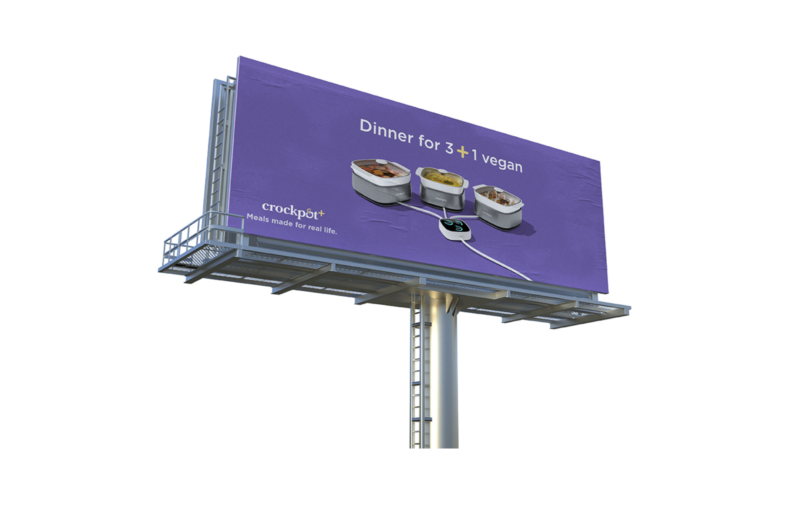
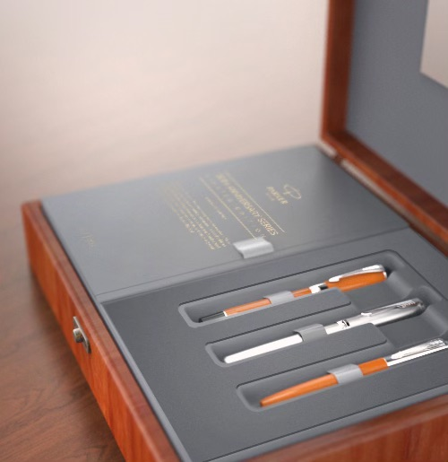

A question about bringing design thinking to a new headquarters took me from the midwest to the east coast — and lit something I haven't stopped chasing since. I've spent years working at the intersection of provocation and strategy: translating messy future possibilities into clear, compelling visions that give organizations the confidence to act.
These aren't polished case studies. They're a body of thinking — concepts, futures, and frameworks across brands, channels, and categories that show how vision work shapes roadmaps, moves budgets, and shifts direction.
"What if [disruptive trigger or shift] happens, resulting in [impact on human behavior or system], forcing us to [design opportunity]?"
"How might we [intended action] for [primary user] so that [desired outcome]?"

What IfWhat if digital commerce becomes the preferred purchasing channel, resulting in consumers expecting anytime, anywhere shopping experiences, forcing us to reimagine how our brands engage, convert, and serve customers online?
Influence: Vision presented by the CEO to the Board of Directors to demonstrate the company's commitment to eCommerce growth. Art direction & design led by Katie.

How Might WeHow might we help the company understand the impact of CMF on the business? The best way is to walk them through it — literally. Plus a book to keep the conversation going.
Influence: Physical exhibit and accompanying publication accepted into the AIGA West Michigan Archives. Storytelling experience design recognized for impact on CPG brand strategy.

How Might WeHow might consumers get a fragrance discovery experience that's easier and more compelling — so they feel confident purchasing from YankeeCandle.com without smelling it first?
Influence: Reframed the eCommerce conversion barrier as a sensory design challenge, informing digital experience and content strategy across the fragrance portfolio.

What IfWhat if the Internet of Things transforms consumer products into connected platforms, resulting in new purchase behaviors driven by convenience, personalization, and data, forcing us to reimagine how our brands create value beyond the physical product?
Influence: Shaped multi-brand digital product roadmap conversations by repositioning hardware as a platform — not just a product.

How Might WeHow might we transform a heated throw from a simple blanket into a personalized wellness companion that helps Millennials and Gen Z unwind, recharge, and feel their best?
Influence: Repositioned a commodity product category through a wellness lens, influencing brand positioning and connected product feature strategy for a new generation of buyers.

How Might WeHow might we help busy households put a home-cooked meal on the table more easily, despite varying tastes, preferences, and dietary needs across the family?
Influence: Defined the product-plus-service vision that informed the Crock-Pot+ connected platform strategy — from recipe personalization to meal planning integration.

How Might WeHow might we create a seamless and inspiring eCommerce experience for fine writing brands like Parker that reflects the premium brand experience online and attracts a new generation of consumers?
Influence: Translated a heritage brand's in-store premium experience into a digital vision — connecting brand equity to conversion strategy for a category at risk of becoming invisible online.
Near term and future state. In-store and online. Packaging to environmental graphics and everything in between. The job is always the same: uncover unmet needs, go after the highest impact opportunity and drive results